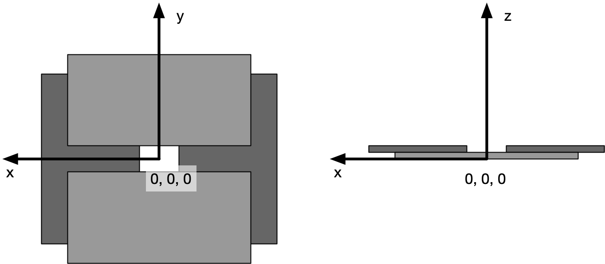

3.3.1.50. NXslit¶
Status:
base class, extends NXobject
Description:
A simple slit.
For more complex geometries, NXaperture should be used.
Symbols:
No symbol table
- Groups cited:
Structure:
@default: (optional) NX_CHAR
Declares which child group contains a path leading to a NXdata group.
It is recommended (as of NIAC2014) to use this attribute to help define the path to the default dataset to be plotted. See https://www.nexusformat.org/2014_How_to_find_default_data.html for a summary of the discussion.
depends_on: (optional) NX_CHAR
Points to the path of the last element in the geometry chain that places this object in space. When followed through that chain is supposed to end at an element depending on “.” i.e. the origin of the coordinate system. If desired the location of the slit can also be described relative to an NXbeam, which will allow a simple description of a non-centred slit.
The reference plane of the slit is orthogonal to the z axis and includes the surface that is the entry surface of the slit. The reference point of the slit is the centre of the slit opening in the x and y axis on the reference plane. The reference point on the z axis is the reference plane.
x_gap: (optional) NX_NUMBER {units=NX_LENGTH}
Size of the gap opening in the first dimension of the local coordinate system.
y_gap: (optional) NX_NUMBER {units=NX_LENGTH}
Size of the gap opening in the second dimension of the local coordinate system.
TRANSFORMATIONS: (optional) NXtransformations
This is the group recommended for holding the chain of translation and rotation operations necessary to position the component within the instrument. The dependency chain may however traverse similar groups in other component groups.
{kind=link}
Hypertext Anchors¶
List of hypertext anchors for all groups, fields, attributes, and links defined in this class.